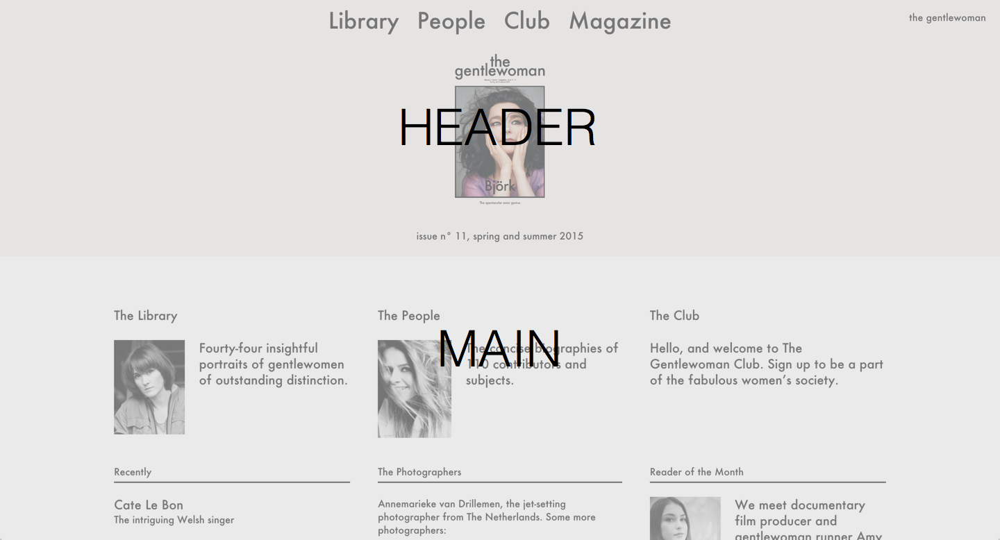
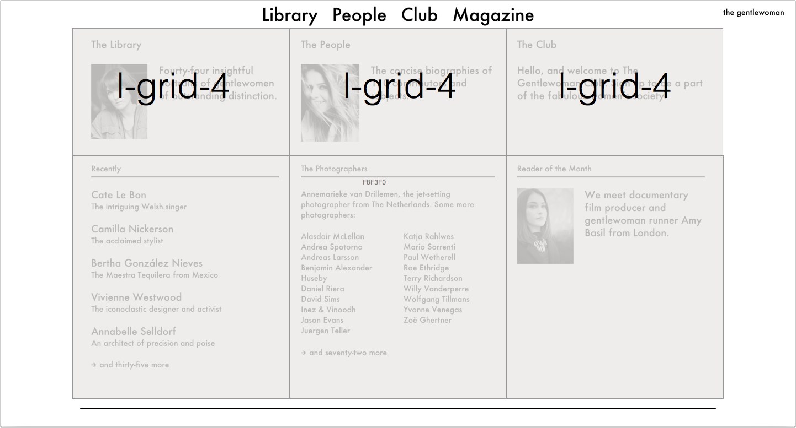
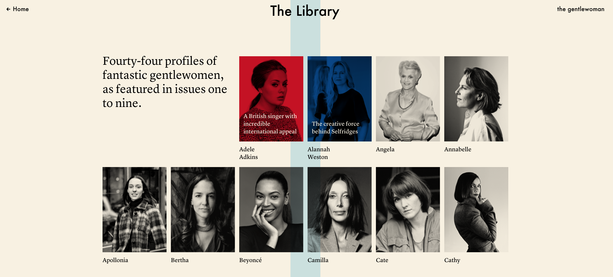

SMACSS
Design Patterns that Make Life Easier
Created by Ashley Chapokas / @achapokas
Slides
http://bit.ly/1cDGsw8What is SMACSS?
Scalable and Modular Architecture for CSS
A way to examine your code design process and as a way to fit those rigid frameworks into a flexible thought process
SMACSS is Categorization
By categorizing CSS rules, we begin to see patterns and can define better practice around those patterns
Category Rules
- Base
- Layout
- State
- Module
- Theme
Layout Rules: HTML5
Layout Rules: Classes
Module: SubClassing
Key Differences: States and Modules
- State styles can apply to layout and/or module styles
- Indicates a Javascript dependency
Theme Rules: Visual Direction
- Colors,images and fonts
- Multiple themes
- Might affect states or modules
- Theme prefix for classification ie: theme-
Major Concern
- Relying on a defined HTML structure
- As the string of selectors increases - so does the disconnection between the HTML and CSS
- The depth of HTML to which the selectors apply is too deep
Refactoring Time!
Download SlidesStep 4
Check to see if there are any other additional styles that have changed
Let's take a look at .right and .left styles
Let's continue removing #topnav
Since we only have one hour..
Next Steps
- Minimize the Depth of Applicability
- Combine Classes - if possibile - to form reusable modules
- Expand Base Styles - add font-sizes and weights for each heading
Read More about Modular CSS!